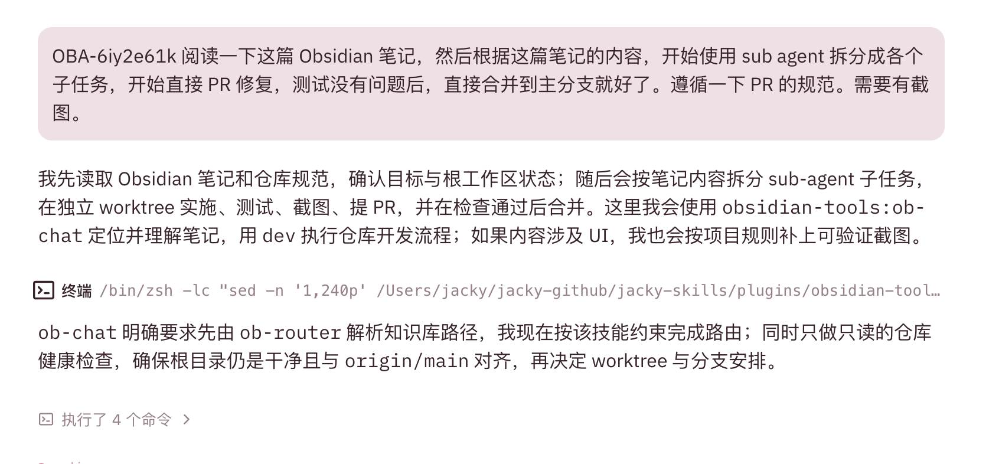
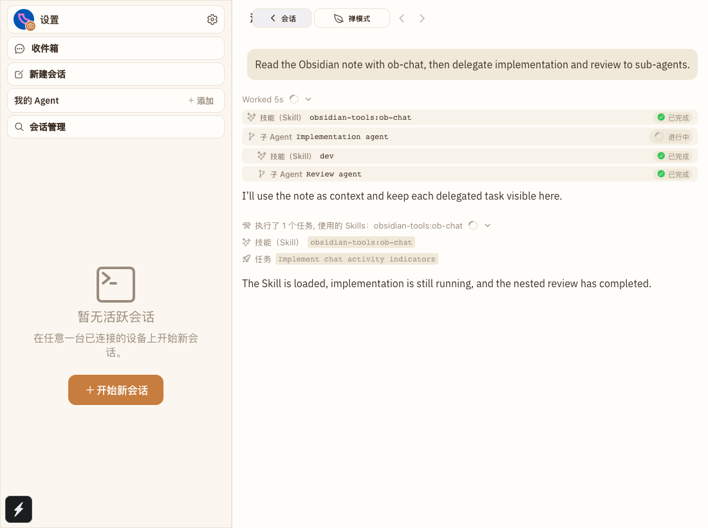

CHAT-ACTIVITY-01 · UI evidence
Skill 与子 Agent 状态，直接出现在对话里。
Happy 现在会把具名 Skill 和每个子 Agent 的生命周期作为结构化活动展示。用户无需再从终端命令或解释性文字中猜测当前发生了什么。
✓ Skill 名称可见
✓ 运行中状态可见
✓ 已完成状态可见
Visible UI cases: 1
01
需求现场
Skill 只在解释文字中出现

02
实现后
结构化、可追踪、已本地化
